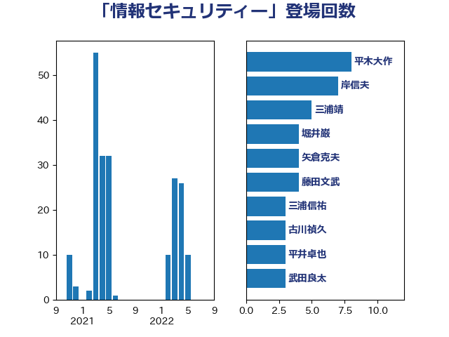

単語「情報セキュリティー」

| 平木大作 | 公明党 | 8 回 |
| 岸信夫 | 自由民主党 | 7 回 |
| 三浦靖 | 自由民主党 | 5 回 |
| 堀井巌 | 自由民主党 | 4 回 |
| 矢倉克夫 | 公明党 | 4 回 |
| 藤田文武 | 日本維新の会 | 4 回 |
| 三浦信祐 | 公明党 | 3 回 |
| 古川禎久 | 自由民主党 | 3 回 |
| 平井卓也 | 自由民主党 | 3 回 |
| 武田良太 | 自由民主党 | 3 回 |
| 浅野哲 | 国民民主党 | 3 回 |
| 牧島かれん | 自由民主党 | 3 回 |
| 菅義偉 | 自由民主党 | 3 回 |
| 音喜多駿 | 日本維新の会 | 3 回 |
| 麻生太郎 | 自由民主党 | 3 回 |
| 安江伸夫 | 公明党 | 2 回 |
| 山岸一生 | 立憲民主党 | 2 回 |
| 空本誠喜 | 日本維新の会 | 2 回 |
| 高木かおり | 日本維新の会 | 2 回 |
| 井上英孝 | 日本維新の会 | 1 回 |
| 仁木博文 | 無所属 | 1 回 |
| 伊藤信太郎 | 自由民主党 | 1 回 |
| 倉林明子 | 日本共産党 | 1 回 |
| 勝目康 | 自由民主党 | 1 回 |
| 古川俊治 | 自由民主党 | 1 回 |
| 川合孝典 | 国民民主党 | 1 回 |
| 川田龍平 | 立憲民主党 | 1 回 |
| 後藤祐一 | 立憲民主党 | 1 回 |
| 後藤茂之 | 自由民主党 | 1 回 |
| 有村治子 | 自由民主党 | 1 回 |
| 末松信介 | 自由民主党 | 1 回 |
| 本田顕子 | 自由民主党 | 1 回 |
| 杉久武 | 公明党 | 1 回 |
| 杉本和巳 | 日本維新の会 | 1 回 |
| 河野太郎 | 自由民主党 | 1 回 |
| 藤井比早之 | 自由民主党 | 1 回 |
| 西岡秀子 | 国民民主党 | 1 回 |
| 輿水恵一 | 公明党 | 1 回 |
| 里見隆治 | 公明党 | 1 回 |
| 野村哲郎 | 自由民主党 | 1 回 |
| 阿部司 | 日本維新の会 | 1 回 |
| 鬼木誠 | 立憲民主党 | 1 回 |